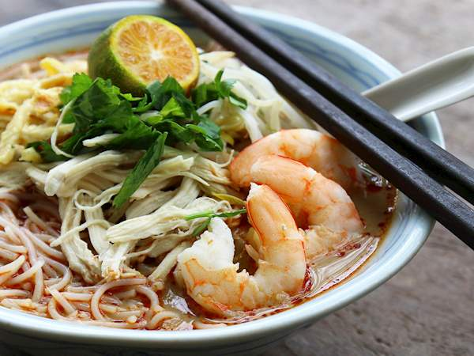

Sarawak Laksa

Description
Sarawak laksa is primarily composed of thin rice vermicelli noodles, shredded chicken, thin beaten egg omelette strips, boiled shrimp, tofu puffs, bean sprouts, thinly sliced cucumbers and finished off with a squeeze of fresh lime.
Ingredients
- 300 grams rice vermicelli, pre soak till just soft
- 300 grams yellow noodles
- 300 grams sarawak laksa paste, store bought
- 300 grams beansprouts
- 300 grams prawns, shelled and deveined
- 200 grams chicken breast meat
- 2.5 litres chicken broth, or water
- 200 grams Thick coconut milk
- 2 eggs, lightly beaten to make omelette
- 6 calamansi, cut in halves
- 1 tbsp salt, to taste
- 1 tsp sugar, to taste
- 1 bunch mint leaves, for garnish
- 1 bunch coriander leaves, for garnish
- 3 red chillies, for garnish
Instructions
- Have ready all ingredients needed to make this traditional sarawak laksa.
- First, cook the prawns in boiling water for 3 to 6 minutes until they turn pink.
- Peel and devein the prawns, reserving the heads and shells for cooking the laksa stock.
- Then poach chicken breast meat in a pot of water / chicken broth and then take it out.
- Once cooled, shred the chicken meat and set aside.
- Add the laksa prawn paste into the pot of chicken broth.
- Then add in the prawn shells into the stock and bring to a boil. The more prawn shells you add, the tastier the broth.
- Cover and on low heat, allow to simmer for 30 minutes.
- Then, sieve the laksa spices and prawn shells out of the stock. You will get a lovely prawn and chicken laksa stock.
- Bring the laksa stock to a boil again.
- Then, add coconut milk and stir well. Cook for another 5 minutes.
- Taste and season with salt and sugar. And we're done cooking the laksa broth.
- Next, blanch briefly the rice vermicelli and noodles in boiling water for a minute and drain well before serving.
- Then, blanch the bean sprouts for a minute. Drained and set aside.
- Beat eggs and fry them thinly on a frying pan.
- Cut into strips and set aside.
- Pluck mint leaves and cut coarsely coriander leaves for garnishing and set aside.
- Cut red chillies into long strips, for colours. Set aside. And we're done. Time to assemble everything together.
- Place the noodles in a bowl, add chicken strips, omelette strips, prawns and bean sprouts. Then pour the hot laksa soup over the ingredients. Garnish with coriander and mint leaves, and then a squeeze of lime. As always, ENJOY!